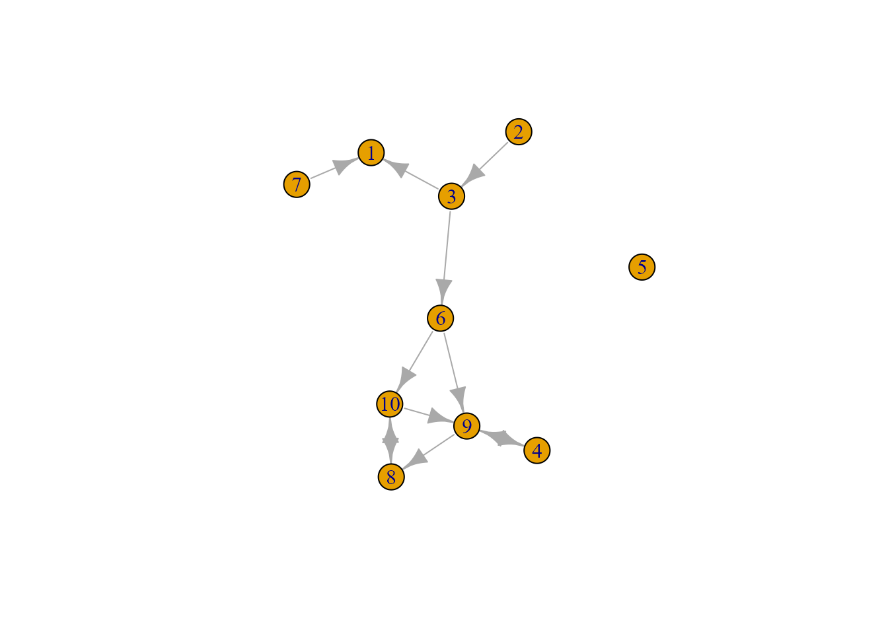
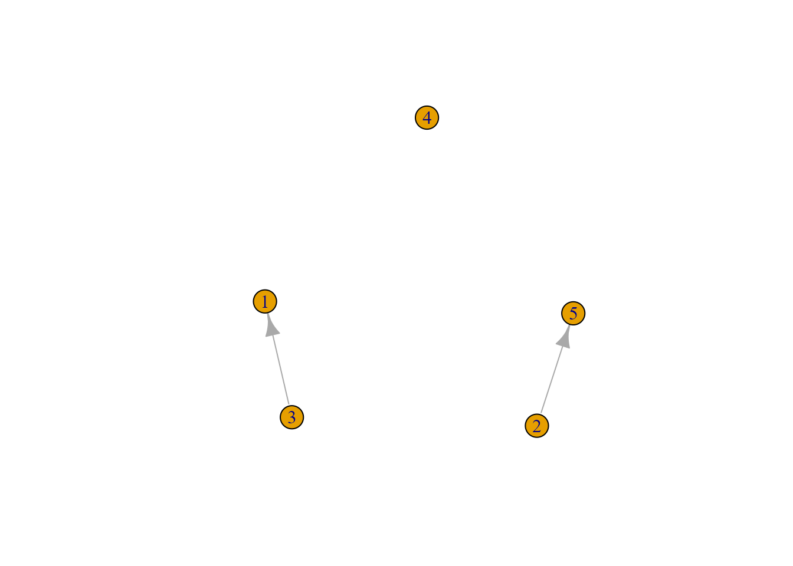
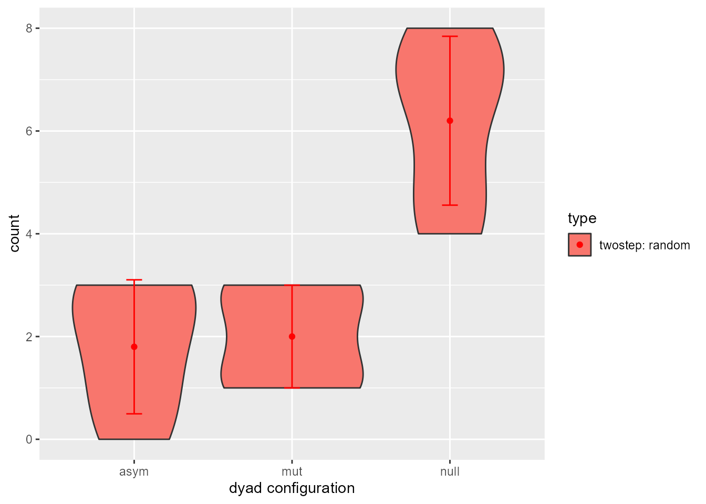

Introduction_RsienaTwoStep
Source:vignettes/1.Introduction_RsienaTwoStep.Rmd
1.Introduction_RsienaTwoStep.Rmd
library(RsienaTwoStep)
#> Loading required package: foreach1. Data sets
Let us have a look at the build-in data sets of
RsienaTwoStep.
1.1. net1
1.1.1. Adjacency matrix
net1
#> [,1] [,2] [,3] [,4] [,5] [,6] [,7] [,8] [,9] [,10]
#> [1,] 0 0 0 0 0 0 0 0 0 0
#> [2,] 0 0 1 0 0 0 0 0 0 0
#> [3,] 1 0 0 0 0 1 0 0 0 0
#> [4,] 0 0 0 0 0 0 0 0 1 0
#> [5,] 0 0 0 0 0 0 0 0 0 0
#> [6,] 0 0 0 0 0 0 0 0 1 1
#> [7,] 1 0 0 0 0 0 0 0 0 0
#> [8,] 0 0 0 0 0 0 0 0 0 1
#> [9,] 0 0 0 1 0 0 0 1 0 0
#> [10,] 0 0 0 0 0 0 0 1 1 01.1.2. Plot
net1g <- igraph::graph_from_adjacency_matrix(net1, mode="directed")
igraph::plot.igraph(net1g)
1.2. net2
1.2.1. Adjacency matrix
net2
#> [,1] [,2] [,3] [,4] [,5]
#> [1,] 0 0 0 0 0
#> [2,] 0 0 0 0 1
#> [3,] 1 0 0 0 0
#> [4,] 0 0 0 0 0
#> [5,] 0 0 0 0 01.2.2. Plot
net2g <- igraph::graph_from_adjacency_matrix(net2, mode="directed")
igraph::plot.igraph(net2g)
2. ABM ministep
2.1. Logic
- sample ego
- construct possible alternative future networks based on all possible
ministeps of ego
- calculate how sampled ego evaluates these possible networks
- Let the ego pick a network, that is, let agent decide on a
tie-change
- GOTO 1 (STOPPING RULE: until you think we have made enough ministeps)
2.2. Possible networks after ministep
Let us suppose we want to know what the possible networks are after
all possible ministeps of one actor part of net2. That is,
let us assume that it is ego#2’s turn to decide on tie-change. What are
the possible networks?
options <- ts_alternatives_ministep(net=net2, ego=2)
options
#> [[1]]
#> [,1] [,2] [,3] [,4] [,5]
#> [1,] 0 0 0 0 0
#> [2,] 1 0 0 0 1
#> [3,] 1 0 0 0 0
#> [4,] 0 0 0 0 0
#> [5,] 0 0 0 0 0
#>
#> [[2]]
#> [,1] [,2] [,3] [,4] [,5]
#> [1,] 0 0 0 0 0
#> [2,] 0 0 0 0 1
#> [3,] 1 0 0 0 0
#> [4,] 0 0 0 0 0
#> [5,] 0 0 0 0 0
#>
#> [[3]]
#> [,1] [,2] [,3] [,4] [,5]
#> [1,] 0 0 0 0 0
#> [2,] 0 0 1 0 1
#> [3,] 1 0 0 0 0
#> [4,] 0 0 0 0 0
#> [5,] 0 0 0 0 0
#>
#> [[4]]
#> [,1] [,2] [,3] [,4] [,5]
#> [1,] 0 0 0 0 0
#> [2,] 0 0 0 1 1
#> [3,] 1 0 0 0 0
#> [4,] 0 0 0 0 0
#> [5,] 0 0 0 0 0
#>
#> [[5]]
#> [,1] [,2] [,3] [,4] [,5]
#> [1,] 0 0 0 0 0
#> [2,] 0 0 0 0 0
#> [3,] 1 0 0 0 0
#> [4,] 0 0 0 0 0
#> [5,] 0 0 0 0 0This function returns a list of all possible networks after all
possible tie-changes available to ego#2 given network net2.
If you look closely you will see that options[[2]] equals
the original network (i.e. ego#2 decided not to change any tie).
2.3. Network statistics
Which option will ego#2 choose? Naturally this will depend on which network characteristics (or statistics) ego#2 finds relevant. Let us suppose that ego#2 bases its decision solely on the number of ties it sends to others and the number of reciprocated ties it has with others.
Let us count the number of ties ego#2 sends to alters.
ts_degree(net=options[[1]], ego=2)
#> [1] 2And in the second (original) option:
ts_degree(net=options[[2]], ego=2)
#> [1] 1In the package RsienaTwoStep there are functions for the
following network statistics \(s\) (see
Ripley et al. (2022) Chapter 12 for the
mathematical formulation):
- degree:
ts_degree() - reciprocity:
ts_recip()
- outdegree activity:
ts_outAct() - indegree activity:
ts_inAct() - outdegree popularity:
ts_outPop() - indegree popularity:
ts_inPop()
- transitivity:
ts_transTrip() - mediated transitivity:
ts_transMedTrip()
- transitive reciprocated triplets:
ts_transRecTrip() - number of three-cycles:
ts_cycle3()
Naturally, you are free to define your own network statistics.
2.4. Evaluation function
But what evaluation value does ego#2 attach to these network
statistics and consequently to the network (in its vicinity) as a whole?
Well these are the parameters, \(\beta\), you will normally estimate with
RSiena::siena07(). Let us suppose the importance for the
statistic ‘degree’ is -1 and for the statistic ‘reciprocity’ is 2.
So you could calculate the evaluation of the network saved in
options[[2]] by hand:
\[f_{eval}(\mathbf{s_{i}},\mathbf{\beta}) = \mathbf{s_i}^\mathsf{T}\mathbf{\beta} \]
1*-1 + 0*2
#> [1] -1or with a little help of the network statistic functions:
Or you could use the ts_eval().
eval <- ts_eval(net=options[[2]], ego=2, statistics=list(ts_degree, ts_recip), parameters=c(-1,2))
eval
#> [1] -1Now, let us calculate the evaluation of all 5 possible networks:
2.5. Choice function
So which option will ego#2 choose? Naturally this will be a stochastic process. But we see the last option has the highest evaluation. We use McFadden’s choice function (for more information see wiki), that is let \(P_{ni}\) be the probability that ego \(n\) chooses network/alternative \(i\). The choice function is then given by:
\[P_{ni} = \frac{exp(\mathbf{s_i}^\mathsf{T}\mathbf{\beta} )}{\Sigma_{j=1}^J exp(\mathbf{s_j}^\mathsf{T}\mathbf{\beta} )},\]
with \(s_i\) a vector of the value of each network statistics for network \(i\) and \(\beta\) is the vector of parameter values. Hence, \(\mathbf{s_i}^\mathsf{T}\mathbf{\beta}\) is the value of the evaluation for network \(i\).
Let us force ego#2 to make a decision.
choice <- sample(1:length(eval), size=1, prob=exp(eval)/sum(exp(eval)))
print("choice:")
choice
print("network:")
options[[choice]]
#> [1] "choice:"
#> [1] 5
#> [1] "network:"
#> [,1] [,2] [,3] [,4] [,5]
#> [1,] 0 0 0 0 0
#> [2,] 0 0 0 0 0
#> [3,] 1 0 0 0 0
#> [4,] 0 0 0 0 0
#> [5,] 0 0 0 0 0If we repeat this process, that is…:
- sample agent
- construct possible alternative networks
- calculate how sampled agent evaluates the possible networks
- Let the agent pick a network, that is, let agent decide on a
tie-change
- GO BACK TO 1 (STOPPING RULE: until you think we have made enough ministeps)
…we have an agent based model.
2.6. Stopping rule
But how many ministeps do we allow? Well, normally this is estimated
by siena07 by the rate parameter. If we do not
make this rate parameter conditional on actor covariates or on network
characteristics, the rate parameter can be interpreted as the average
number of ministeps each actor in the network is allowed to make before
time is up. Let us suppose the rate parameter is 2 . Thus
in total the number of possible ministeps will be
nrow(net2)*rate: 10. For a more detailed - and more
correct interpretation of the rate parameter in
siena07 see: www.jochemtolsma.nl
2.7. Example
To demonstrate the network evolution:
ts_sims(nsims=1, net=net2, rate=2, statistics=list(ts_degree, ts_recip), parameters = c(-1,2), p2step=c(1,0,0), chain = TRUE )
#> [[1]]
#> [[1]][[1]]
#> [,1] [,2] [,3] [,4] [,5]
#> [1,] 0 0 0 0 0
#> [2,] 0 0 0 0 1
#> [3,] 1 0 0 1 0
#> [4,] 0 0 0 0 0
#> [5,] 0 0 0 0 0
#>
#> [[1]][[2]]
#> [,1] [,2] [,3] [,4] [,5]
#> [1,] 0 0 0 0 0
#> [2,] 0 0 0 0 1
#> [3,] 1 0 0 1 0
#> [4,] 0 0 0 0 0
#> [5,] 1 0 0 0 0
#>
#> [[1]][[3]]
#> [,1] [,2] [,3] [,4] [,5]
#> [1,] 0 0 0 0 0
#> [2,] 0 0 0 0 0
#> [3,] 1 0 0 1 0
#> [4,] 0 0 0 0 0
#> [5,] 1 0 0 0 0
#>
#> [[1]][[4]]
#> [,1] [,2] [,3] [,4] [,5]
#> [1,] 0 0 0 1 0
#> [2,] 0 0 0 0 0
#> [3,] 1 0 0 1 0
#> [4,] 0 0 0 0 0
#> [5,] 1 0 0 0 0
#>
#> [[1]][[5]]
#> [,1] [,2] [,3] [,4] [,5]
#> [1,] 0 0 0 1 0
#> [2,] 0 0 0 0 0
#> [3,] 1 0 0 1 0
#> [4,] 0 0 0 0 0
#> [5,] 1 0 0 0 0
#>
#> [[1]][[6]]
#> [,1] [,2] [,3] [,4] [,5]
#> [1,] 0 0 0 1 0
#> [2,] 0 0 0 0 0
#> [3,] 1 0 0 1 0
#> [4,] 0 0 1 0 0
#> [5,] 1 0 0 0 0
#>
#> [[1]][[7]]
#> [,1] [,2] [,3] [,4] [,5]
#> [1,] 0 0 1 1 0
#> [2,] 0 0 0 0 0
#> [3,] 1 0 0 1 0
#> [4,] 0 0 1 0 0
#> [5,] 1 0 0 0 0
#>
#> [[1]][[8]]
#> [,1] [,2] [,3] [,4] [,5]
#> [1,] 0 0 1 1 0
#> [2,] 0 0 0 0 0
#> [3,] 1 0 0 1 0
#> [4,] 1 0 1 0 0
#> [5,] 1 0 0 0 0
#>
#> [[1]][[9]]
#> [,1] [,2] [,3] [,4] [,5]
#> [1,] 0 0 1 1 0
#> [2,] 0 0 0 0 0
#> [3,] 1 0 0 1 0
#> [4,] 1 1 1 0 0
#> [5,] 1 0 0 0 0
#>
#> [[1]][[10]]
#> [,1] [,2] [,3] [,4] [,5]
#> [1,] 0 0 1 1 0
#> [2,] 0 0 0 0 0
#> [3,] 1 0 0 0 0
#> [4,] 1 1 1 0 0
#> [5,] 1 0 0 0 03. ABM twostep
3.1. Logic
The general logic of the ABM that allows for twosteps is very similar to the ABM ministep model:
- sample two agents
- construct possible alternative networks
- calculate how the sampled agents evaluate the possible
networks
- Let the agents together pick the subsequent network, that is, let
agents decide on the twostep (the simultaneous two ministeps)
- GOTO 1 (STOPPING RULE: until you think we have made enough ministeps/twosteps)
3.2. Sample two agents
-
Simultaneity: agents are sampled randomly
-
Strict coordination: only specific dyads are
sampled (with a specific distance between them, based on either out-,
in- or reciprocal ties)
- Weak coordination: agents are sampled randomly but only specific twosteps are regarded as ‘coordinated’ twosteps and, consequently only some of the possible alternative networks are included in the choice set for the dyad.
3.3. Possible networks after twostep
If we want to allow for simultaneity, we simply let first agent1 make all possible ministeps and then conditional on these alternative networks let agent2 make all possible ministeps. Please note that the order in which we let agents make the ministeps is not important. We simple construct all the networks that could result from agent1 and agent2 make a simultaneous ministep.
Exception:
With weak coordination we will assess which possible alternative networks impact the evaluation function of both egos. Only those possible alternative networks are regarded as the result of coordination and included in the choice set. Thus, it is not necessarry for ego1 and ego2 to be connected at time1 but then they should at least be connected at time2 in such a way that they influence each others evaluation function.
The implementation in the current version ofRsieneTwoStepis, however, a bit different. With weak coordination we simple assess the distance between ego1 and ego2 at time1 and time2. If at eithter time1 or time2 the distance is within the set threshold, we regard the twostep as a coordinated twostep.
3.4. Network statistics
We use the same network statistics as for the ABM ministep. But
please note, that not all existing network statistics of
RSiena make sense. See for example the figure below.
Suppose the evaluation of the transitive triad for actor i
depends on whether path i to j was the closing path
(i.e., created after path h to j) or not. In a
twostep, both ties may be created simultaneously and we cannot
distinguish these two routes.

twostep versus ministeps
note: Dashed arrows represent ministeps (long dash) or twostep (short dash); solid arrows represent initial ties (grey) or created ties (red).
3.5. Evaluation function
We start by letting each involved agent evaluate all possible
networks based on the individual evaluation functions. Thus agent1 gives
an evaluation and agent2 gives an evaluation.
Next we have to decide how to combine the separate evaluations of the
two agents. For now, in RsienaTwoStep, we simply take the
mean of the two separate evaluations as the final evaluation score.
3.6. Choice function
Here we follow the same logic as before. If we know the evaluation score of each network we simply apply a Mc Fadden’s choice function. That is, the actors together ‘decide’ on the future network out of the possible alternative networks in the choice set, given the combined evaluation of these networks. Thus we see the dyad formed by agent1 and agent2 as the decision agent. Please not that agents (or rather the dyad) thus favor the network with the highest combined ‘utility’ score. This is not necessarily the network that would give one of the two agents the highest satisfaction.
3.7. Stopping rule
Once again the logic is exactly similar. However, we count a twostep as two ministeps. Thus if each actor is allowed to make on average 8 ministeps, actors are allowed to make on average 4 twosteps.
3.8. Example
ts_sims(nsims = 1, net = net2, rate = 2, statistics = list(ts_degree, ts_recip), parameters = c(-1, 2), p2step=c(0,1,0), chain = TRUE)
#> [[1]]
#> [[1]][[1]]
#> [,1] [,2] [,3] [,4] [,5]
#> [1,] 0 0 0 0 0
#> [2,] 0 0 0 0 0
#> [3,] 0 0 0 0 0
#> [4,] 0 0 0 0 0
#> [5,] 0 0 0 0 0
#>
#> [[1]][[2]]
#> [,1] [,2] [,3] [,4] [,5]
#> [1,] 0 0 0 0 0
#> [2,] 0 0 0 0 0
#> [3,] 0 0 0 0 0
#> [4,] 0 0 0 0 0
#> [5,] 0 0 0 0 0
#>
#> [[1]][[3]]
#> [,1] [,2] [,3] [,4] [,5]
#> [1,] 0 0 0 1 0
#> [2,] 0 0 0 0 0
#> [3,] 0 0 0 0 0
#> [4,] 1 0 0 0 0
#> [5,] 0 0 0 0 0
#>
#> [[1]][[4]]
#> [,1] [,2] [,3] [,4] [,5]
#> [1,] 0 1 0 1 0
#> [2,] 0 0 1 0 0
#> [3,] 0 0 0 0 0
#> [4,] 1 0 0 0 0
#> [5,] 0 0 0 0 0
#>
#> [[1]][[5]]
#> [,1] [,2] [,3] [,4] [,5]
#> [1,] 0 1 0 1 0
#> [2,] 1 0 1 0 0
#> [3,] 0 1 0 0 0
#> [4,] 1 0 0 0 0
#> [5,] 0 0 0 0 04. ABM simstep
4.1. Logic
A second way in which the ministep assumption can be relaxed is to allow the same actor to make two ministeps simultaneously. Suppose a triad formed by actors i, j and h and a tie between h and j.

simstep versus ministeps
note: Dashed arrows represent ministeps (long dash) or simstep (short dash); solid arrows represent initial ties (grey) or created ties (red).
Suppose, actors evaluate transitive triplet structures positively.
Normally, under the ministep assumption, actor i should first
make a tie to actor h (or j) and only when it is its
turn again to make a tie change, make a tie to actor j (or
h). Naturally, in larger networks a lot could have happened in
the mean time. Given the network structure at the time, actor i
is allowed to make the second ministep, actor i may not favor
making the additional tie to actor j (or h)
anymore.
Also, actor i may not even want to create a tie to actor
h or j if it is not already sure it can close the
triad immediately afterwards (or even simultaneously). Naturally, in
real life situations, it is not that strange to create multiple ties at
(almost) the same time. See for example the paper on the impact of Kudos
on running behavior (Franken, Bekhuis, and Tolsma
2023). If you are on Strava (or on any other social media for
that matter), it is very common to give multiple kudos (of likes) to
different people in your network at - more or less - the same time.
4.2. Possible networks after simstep
Simply all networks that could arise after two sequential ministeps made by one actor (including the no change option). Please note that the choice set only contains unique network configurations.
4.3. Network statistics
We use the same network statistics as for the ABM ministep. But
please note, that not all existing network statistics of
RSiena make sense. See for example the figure above.
Suppose the evaluation of the transitive triad for actor i
depends on whether path i to j was the closing path or
the path i to h. In a simstep, both ties may be
created simultaneously and we cannot distinguish these two routes.
4.6. Stopping rule
Once again the logic is exactly similar. However, we count a simstep as two ministeps. Thus if each actor is allowed to make on average 8 ministeps, actors are allowed to make on average 4 simsteps.
4.7. Example
ts_sims(nsims = 1, net = net2, rate = 2, statistics = list(ts_degree, ts_recip, ts_outAct), parameters = c(-2, 2,2), p2step=c(0,0,1), chain = TRUE)
#> [[1]]
#> [[1]][[1]]
#> [,1] [,2] [,3] [,4] [,5]
#> [1,] 0 0 1 1 0
#> [2,] 0 0 0 0 1
#> [3,] 1 0 0 0 0
#> [4,] 0 0 0 0 0
#> [5,] 0 0 0 0 0
#>
#> [[1]][[2]]
#> [,1] [,2] [,3] [,4] [,5]
#> [1,] 0 0 1 1 0
#> [2,] 1 0 1 0 1
#> [3,] 1 0 0 0 0
#> [4,] 0 0 0 0 0
#> [5,] 0 0 0 0 0
#>
#> [[1]][[3]]
#> [,1] [,2] [,3] [,4] [,5]
#> [1,] 0 0 1 1 0
#> [2,] 1 0 1 1 1
#> [3,] 1 0 0 0 0
#> [4,] 0 0 0 0 0
#> [5,] 0 0 0 0 0
#>
#> [[1]][[4]]
#> [,1] [,2] [,3] [,4] [,5]
#> [1,] 0 0 1 1 0
#> [2,] 1 0 1 1 1
#> [3,] 1 0 0 0 0
#> [4,] 1 1 0 0 0
#> [5,] 0 0 0 0 0
#>
#> [[1]][[5]]
#> [,1] [,2] [,3] [,4] [,5]
#> [1,] 0 1 1 1 1
#> [2,] 1 0 1 1 1
#> [3,] 1 0 0 0 0
#> [4,] 1 1 0 0 0
#> [5,] 0 0 0 0 05. Network census
5.1. Simulate networks
Let us simulate five times the outcome of a ABM twostep process and only save the final network
5.2. Dyad and triad configurations
Now we want to count the dyad and triad configurations.
df_dyads <- ts_dyads(nets, forplot = FALSE, simtype="twostep: random")
df_triads <- ts_triads(nets, forplot = FALSE, simtype="twostep: random")
df_dyads
df_triads
#> Mut Asym Null type
#> 1 1 2 7 twostep: random
#> 2 3 3 4 twostep: random
#> 3 3 0 7 twostep: random
#> 4 2 3 5 twostep: random
#> 5 1 1 8 twostep: random
#> 003 012 102 021D 021U 021C 111D 111U 030T 030C 201 120D 120U 120C 210 300
#> 1 3 3 2 1 0 0 1 0 0 0 0 0 0 0 0 0
#> 2 0 0 4 1 0 1 1 1 0 0 0 0 0 1 1 0
#> 3 3 0 5 0 0 0 0 0 0 0 2 0 0 0 0 0
#> 4 0 5 1 0 0 0 1 1 0 0 1 0 0 1 0 0
#> 5 5 2 2 0 0 0 1 0 0 0 0 0 0 0 0 0
#> type
#> 1 twostep: random
#> 2 twostep: random
#> 3 twostep: random
#> 4 twostep: random
#> 5 twostep: random5.3. Violin plots
If you want to make violin plots of these census, it is best to set
the option forplot to TRUE.
Just as an example:
df_dyads2 <- ts_dyads(nets, forplot = TRUE, simtype="twostep: random")
library(ggplot2)
#> Warning: package 'ggplot2' was built under R version 4.2.2
p <- ggplot(df_dyads2, aes(x=x, y=y, fill=type)) +
geom_violin(position=position_dodge(1)) +
stat_summary(fun = mean,
geom = "errorbar",
fun.max = function(x) mean(x) + sd(x),
fun.min = function(x) mean(x) - sd(x),
width=.1,
color="red", position=position_dodge(1)) +
stat_summary(fun = mean,
geom = "point",
color="red", position=position_dodge(1)) +
xlab('dyad configuration') + ylab('count')
p